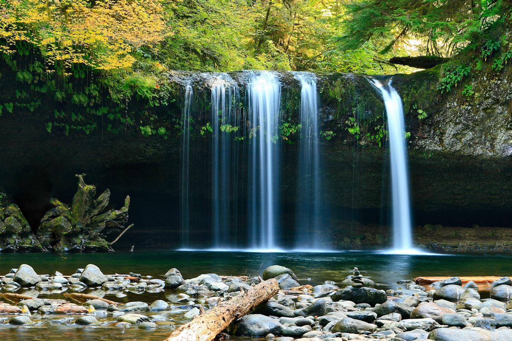

About Dean
Dean photographs water like it owes him money.
Dean is a fine art photographer with a soft spot for waterfalls, winding trails, dramatic skies, and the kind of quiet places where everyone else says, "Are we done yet?" and he says, "One more shot."
His camera is usually pointed at nature, especially moving water, because apparently streams are more cooperative portrait subjects than the rest of us.
Portfolio
Waterfalls & Nature
A clean gallery direction for Dean's nature work. These are placeholder images for now, ready to be replaced with his real waterfall and landscape photography.
Contact
Follow the latest work.
For current photos, recent posts, and direct messages, visit Dean Smith Photography on Facebook.